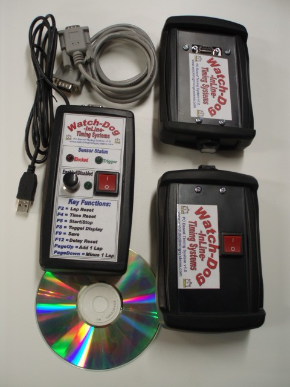

Watch-Dog Timing Systems
Sports Timing Equipment for Human and Dog Sports!!
Watch-Dog Mini ADVANCED Flyball Timing system

All new advanced features!
-
Completely new 2x16 character display, Microprocessor & Program
-
Race and Practice Modes
-
Display and Review Start, Lap, Total Times (up to 20 laps)
-
Lap Faults also logged (up to 20 laps)
-
Display of faulted laps with light tree (BFA or Belgian flyball versions)
-
Brighter External Display
-
NEW Sintra Plastic Stands!!
-
Same Easy Setup!!!
Sintra Jump Sets
Jump set features!
- Precision CNC cut from high quality 1/2 " 13mm Sintra PVC board
- All corners rounded for safety
- All edges 1/4 rounded
- Slots are precision CNC cut
- Dimensions follow NAFA standards
Watch-Dog PC Based Speed Skating/Track timing system
Information
36" and 42" between the uprights by 4" or 6" heights.
*custom sizes available*
** Also Avaliable in Sintra!!! **
Watch-Dog Mini Flyball Timing system
Information
36" and 42" between the uprights by 4" or 6" heights.
*custom sizes available*
** Also Avaliable in Sintra!!! **